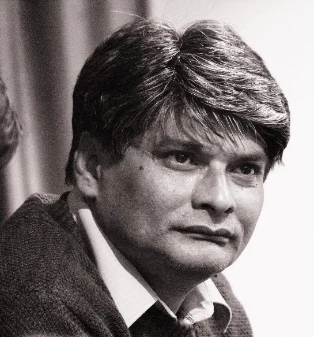
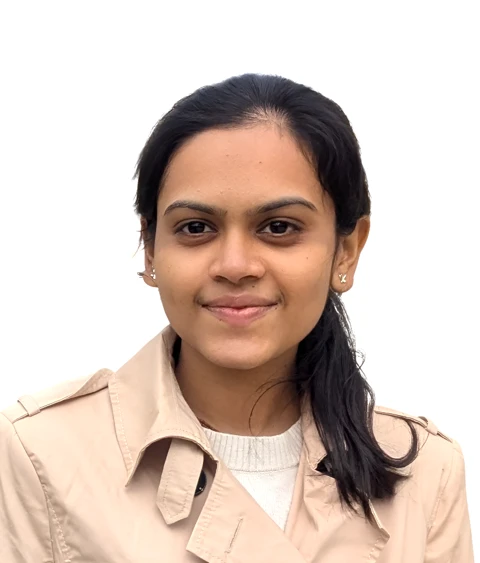
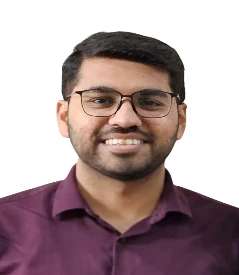
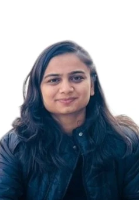
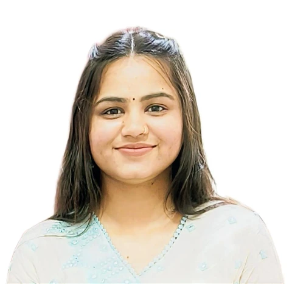
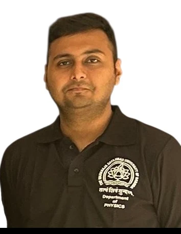

Principal Investigator

Prof. Prafulla K. Jha
Ph.D., Condensed Matter Physics, Barkatullah University, Bhopal (1992); M.Sc. Physics, University of Poona, Pune (1989); B.Sc. Physics, University of Poona, Pune (1987). Research interests span computational (first-principles DFT) materials science — graphene and carbon allotropes, boron nitride, nanoparticles and nanowires, complex oxides, nuclear materials, transition-metal alloys and heterostructures — together with low-frequency Raman spectroscopy, high-pressure physics, phonon engineering and machine-learning-assisted materials design.
Email: pk.jha-phy@msubaroda.ac.in · prafullaj@yahoo.com
Mobile: +91-9825032877
ORCID · Scopus · Vidwan · Google Scholar
Current Ph.D. Students

Zarna D. Ponkiya
Ph.D. Students
Machine learning and high-throughput approach towards materials design for functional applications

Saurav Patel
Ph.D. Students / SRF Inspire
Exploration of topological quantum materials in non-centrosymmetric compounds: a DFT study
Paras Patel
Ph.D. Students / SRF ANRF-PAIR Project
Exploration of novel high-energy-density materials using density functional theory

Namrata A. Tukadiya
Ph.D. Students
Rational design of highly efficient solar-cell materials using computational approach

Riddhi Sainda
Ph.D. Students
Computational exploration of waste separation via membranes: a combined density functional theory and molecular dynamics approach
Jay Panchal
Ph.D. Students
Investigation of novel topological phononic materials using density functional theory
Apeksha Gauswami
Ph.D. Students
Exploration of novel altermagnetic materials: a computational approach
Project Staff

Yash Yadav
JRF ANRF-PAIR Project
Project: ANRF-PAIR Energy Materials
Doctoral alumni
- Dr. Mina Talati — Vibrational properties of colossal magnetoresistance materials
- Dr. Satyam Shinde — Phonons in semiconductors and diluted magnetic semiconductors at high pressure
- Dr. Ankur Pandya — Carrier–phonon interactions in diluted nitride nanostructures
- Dr. Sanjeev K. Gupta — Vibrational properties of some free and embedded nanoparticles: an experimental and computational simulation
- Dr. Shree Mishra — Phase stability of TiO2 nanostructures
- Dr. Sanjay D. Gupta — Electronic band structure and dynamical properties of some rare-earth and metal nitrides: a first-principles study
- Dr. Venu H. Mankad — Engineering nanoscale phonon and phonon-assisted properties in some nanoparticles and nanofluids
- Dr. Nikita Shah — Ab-initio molecular dynamics calculations of vibrational properties of refractory carbides
- Dr. Himadri R. Soni — Electronic and phonon engineering of graphene: a density functional theoretical study
- Dr. Priyanka Jakhmola — Studies of structural, optical and electrical properties of CIS-based thin-film solar cells
- Dr. Purvi Bhatt — Thermodynamic and thermoelectric properties of nanostructured TiO2 and SnO2 and their composites
- Dr. Shweta Dabhi — Electronic and vibrational properties of hybrid nanostructures
- Dr. Swapnil Patil — Synthesis and colloidal processing of magnetic CMR materials
- Dr. Swati Gahlot — Studies on structural features and separation performance of charged nanocomposite membranes
- Dr. Nidhi Astik — Density functional theory study of CMR materials using two different routes
- Dr. Bhumi A. Baraiya — DFT of free and oxide-supported metal nanoclusters and nanoalloys: a heterogeneous catalysis
- Dr. Basant Roondhe — First-principles study of bio-conjugated boron nitride nanostructures
- Dr. Deepak Upadhyay — Investigation of structural, electronic, magnetic and dynamical properties of transition-metal doped delafossite-type oxides
- Dr. Som Narayan — Tailoring electronic, mechanical and dynamical properties of two-dimensional materials using density functional theory
- Dr. Trupti K. Gajaria — Energetic, structural and optoelectronic properties of III–V semiconductor heterostructure nanowires
- Dr. Vaishali Sharma — Structural, electronic and vibrational properties of functionalized graphene quantum dots using density functional theory
- Dr. Anjali Patel — In-silico novel identification of anti-cancer drugs using density functional theory and molecular dynamics simulation
- Dr. Sharad Babu Pillai — First-principles and Raman spectroscopic investigation on some geologically important materials
- Dr. Archana N. Inamdar — A density functional theory investigation on hydrogen and oxygen evolution reactions of metal chalcogenides
- Dr. Darshilkumar Chodvadiya — Multiscale modelling of two-dimensional materials for solar water splitting and hydrogen storage
- Dr. Raghottam M. Sattigeri — Topological insulating phase in some bulk and low-dimensional materials
- Dr. Heera T. Nair — Hydrogen storage in functionalised carbon systems: a DFT study
- Dr. Sourav Kanti Jana — Investigation on binding affinity of biomolecules over novel carbon nanomaterials
- Dr. Joshi Maitry Dipakkumar — Ultrafast carrier dynamics in pnictides and chalcogenides through electron–phonon coupling
- Dr. Hemang Tanna — Rational design of transition-metal single-atom catalysts using density functional theory
- Dr. Bhautik R. Dhori — Exploring topological properties of half-Heusler compounds using density functional theory